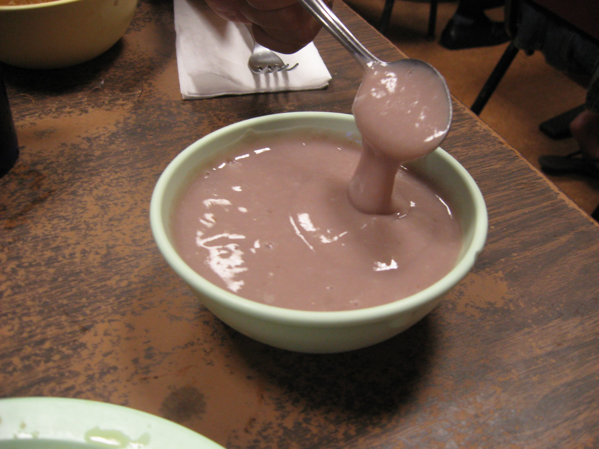
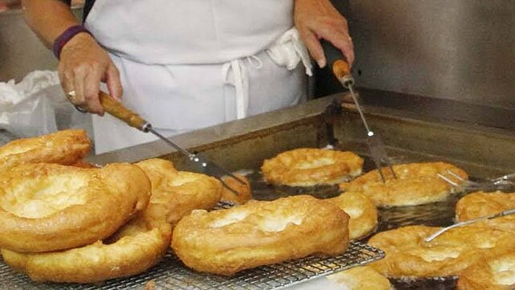
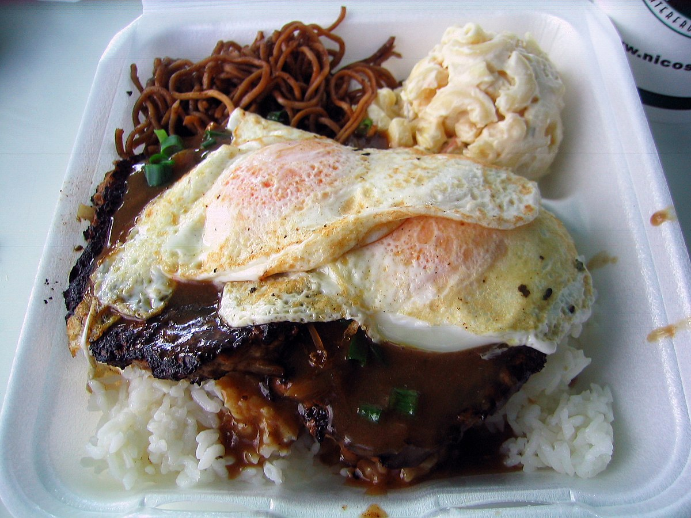

Hawaiian Food History
Everyone loves food, and if you're not a fan of dieting, Hawaiian cuisine might be for you! Here's a brief overview of how Hawaiian food has changed over time:
Precontact Period (300-500 AD)

- Polynesians arrived with few native edible plants available.
- Introduced at least 27 plant species, most notably taro, which became a staple of their diet and used to make the culturally significant poi (pictured above).
- Limited native meat sources (bats and lizards), so pigs, chickens, and dogs were introduced. Pigs were used in sacrifices and celebrations (luaus).
Postcontact Period

- James Cook introduced seeds for plants like onions, pumpkins, and melons.
- George Vancouver brought cattle, leading to beef becoming a Hawaiian staple. Paniolos (Mexican cowboys) taught locals ranching.
- Sugar plantations brought economic power to the Big Five plantation owners, who eventually overthrew the Hawaiian monarchy.
- Immigrant workers from China, Japan, Korea, and Portugal brought new foods like rice, barbecue pits, and malasadas (pictured above), gradually replacing traditional ingredients.
Statehood and Modern Era

- After so much influence in the Postcontact period, Hawaiian locals had lost a lot of their food culture.
- In the mid-20th century, 12 chefs compiled 120 recipes representing a blend of Hawaiian and immigrant cuisines.
- Modern Hawaiian dishes like loco moco were born (pictured above), using local ingredients rather than imported plantation crops.
- Today, Hawaiians embrace new foods like Spam, and meat is often prepared teriyaki-style.
Conclusion
Hawaii has become a true cultural melting pot, with locals adding their own twist to traditional ethnic dishes, creating a unique flavor that blends influences from around the world.